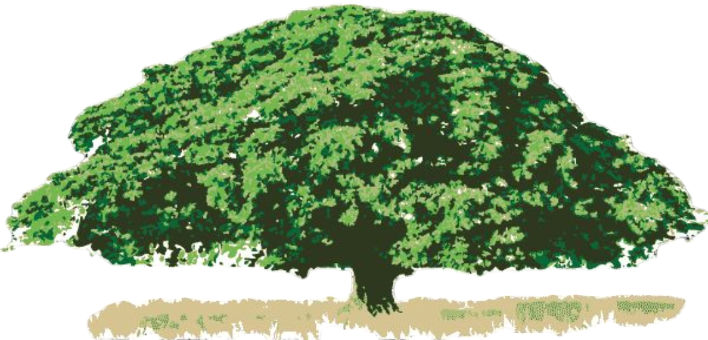

Red de Monitoreo Climático
La conformación del proyecto surgió del interés por monitorear variables climáticas de manera precisa y en tiempo real, utilizando tecnologías abiertas y accesibles.
Este esfuerzo colaborativo busca generar información confiable para la toma de decisiones en el ámbito ambiental, facilitando estudios de temperatura y humedad mediante sensores distribuidos y plataformas visuales modernas.
El proyecto se implementá en colaboración con el Instituto Tecnologico Superior de Xalapa y la Universidad de Costa Rica, siendo una herramienta educativa y científica de gran valor.